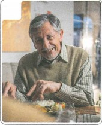
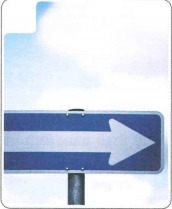
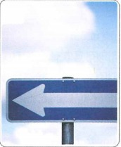
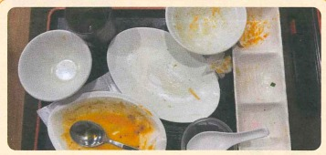
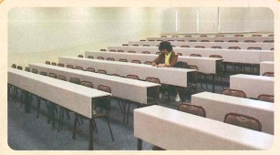
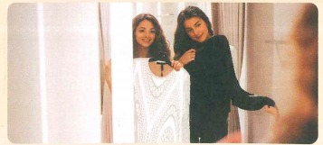
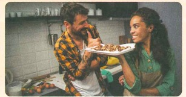

虽然你忘了，但是我记得
Mặc dù em quên, nhưng anh vẫn nhớ
🔥 Khởi động
Chọn hình tương ứng: A 左边 B 右边 C 妻子 D 丈夫



Từ trái nghĩa: 贵 → ____ 大 → ____ 热 → ____ 多 → ____ 早 → ____
📚 Từ vựng 1 · Học trước khi nghe
🎧 Nghe Bài khóa 1
（1）王一雪和刘明在看什么？ A 钱 B 手表 C 裤子
（2）王一雪和刘明看的东西多少钱？ A 5800元 B 6800元 C 8800元
💬 Bài khóa 1
（1）王一雪和刘明觉得哪块手表好看？
（2）王一雪和刘明觉得手表贵不贵？
🧠 Câu so sánh 比 (1)
我也觉得左边的比右边的好看。
今天比昨天冷。
他觉得踢足球比打篮球有意思。
📚 Từ vựng 2 · Học trước khi nghe
🎧 Nghe Bài khóa 2
（1）王一雪和刘明要去做什么？ A 去吃饭 B 看电影 C 买东西
（2）王一雪要在哪儿买票？ A 网上 B 电影院 C 商场里
💬 Bài khóa 2
（1）王一雪喜欢看什么电影？
（2）王一雪为什么要到网上买票？
🧠 Câu so sánh 比 (2)
Trong câu so sánh dùng “比”, trước tính từ không dùng 很、非常; có thể dùng 还、更 để tăng mức độ.
这个电影比那个爱情片更有意思。
今天比昨天更热。
我觉得奶茶比牛奶还好喝。
📚 Từ vựng 3 · Học trước khi nghe
🎧 Nghe Bài khóa 3
（1）今天是几月几号？ A 1月21号 B 1月27号 C 8月27号
（2）刘明给王一雪买了什么礼物？ A 手表 B 电影票 C 好吃的
💬 Bài khóa 3
（1）刘明为什么点很多菜？
（2）王一雪记得今天是自己的生日吗？
🧠 虽然……，但是……
Câu ghép chuyển ý, “虽然” và “但是” có thể dùng thành cặp, cũng có thể lược một trong hai.
虽然你忘了，但是我记得。
外边下雪了，但是不太冷。
虽然觉得有点儿累，我还是走回家了。
📚 Từ vựng 4 · Học trước khi nghe
🎧 Nghe Bài khóa 4
（1）丈夫忘了妻子的生日。（ ）
（2）妻子给丈夫买了一块手表。（ ）
📖 Bài khóa 4
（1）妻子忘了什么？ A 自己的生日 B 丈夫的生日 C 孩子的生日
（2）丈夫没请妻子做什么？ A 去吃饭 B 看电影 C 去唱歌
✏️ Bài tập tổng hợp
Chọn: A 左边 B 记得 C 手表 D 有意思 E 花
（1）我的 在哪儿？你看见了吗？
（2）我 那个超市卖画笔，我们过去看看。
（3）我们在商场买了很多东西， 了很多钱。
（4）我昨天看的那个电影很 。
（5）A： 这个人是你妹妹吗？ B：是我姐姐，她比我大。
🖼️ Nhìn tranh hoàn thành câu
Phần này có đủ tranh từ giáo trình.

虽然他 ，但是都吃完了。

很晚了， 他还在教室里学习。

这两件衣服都不错，但是我觉得黑色的 白色的 好看。

我觉得你做的菜 饭馆的菜还好吃。
🎭 Hoạt động trên lớp · Đóng vai
Ba người một nhóm: một người đóng vai nhân viên phục vụ, hai người là khách. Hỏi giá và hương vị món ăn, so sánh món nhà hàng với món tự nấu. Cố gắng dùng từ vựng và ngữ pháp của bài.
B：好的。你们想吃点儿什么？